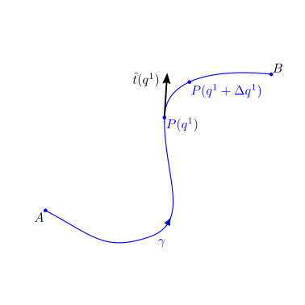
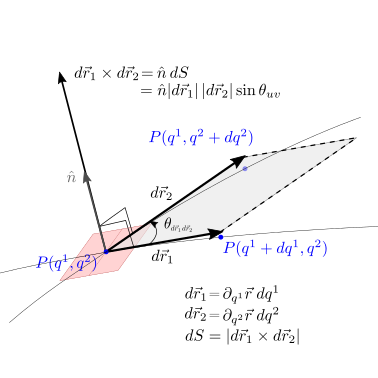
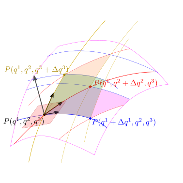
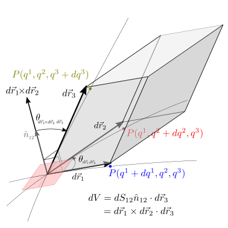

28.3. Integrali in spazi euclidei#
In questa sezione vengono presentati alcuni integrali comuni di campi scalari e vettoriali, che compaiono frequentemente in fisica e in altri ambiti scientifici. Il calcolo degli integrali in spazi euclidei viene svolto sfruttando una parametrizzazione del dominio con un insieme di coordinate per ricondurre questi integrali a integrali su domini multi-dimensionali, dopo aver valutato correttamente l’espressione dei domini elementari in funzione delle variazioni elementari delle coordinate usate nella parametrizzazione.
28.3.1. Integrali di linea#
Il vettore elementare di una curva nello spazio, descritta in forma parametrica \(\vec{r}(q^1)\) è il vettore
Lunghezza di arco. Tra le possibili parametrizzazioni regolari della curva, esiste una parametrizzazione particolare, generalmente indicata con \(s\), e definita dalla condizione
cioè la variazione del parametro \(s\) è uguale alla lunghezza dell’elemento di curva. Il parametro \(s\) viene definito lunghezza d’arco e dalla sua definizione segue immediatamente che la derivata della posizione della curva rispetto a \(s\) è il versore tangente \(\hat{t}\),
 |
|
|


28.3.1.1. Densità#
Data una curva \(\gamma\) nello spazio euclideo descritta dall’equazione parametrica
e una funzione scalare \(m(\vec{r})\) definita sui punti della curva, \(\vec{r} \in \gamma\), densità lineare di una proprietà \(M\) additivà, si può calcolare la proprietà \(M\) associata alla linea \(\gamma\) come l’integrale
o indicando esplicitamente le dimensioni dell’elemento di linea (e indipendenti dal suo verso), e usando il parametro \(\gamma\) come variabile indipendente del problema,
Questo tipo di integrale può essere utilizzato per calcolare la lunghezza di una curva o alcune proprietà additive della curva, di cui la funzione integranda è una densità lineare.
Example 28.11 (Lunghezza di un quarto di cerchio)
Un arco di circonferenza corrispondente a un quarto di essa può essere rappresentato in forma parametrica come,
L’elemento di curva è
e il suo modulo vale
La lunghezza della curva si ottiene con densità di proprietà \(m = 1\), todo e, poiché la parametrizzazione è regolare e con \(t\) crescente per scrivere \(|d t| = d t\) e \(R > 0\),
Example 28.12 (Massa di un quarto di cerchio di densità non uniforme)
Example 28.13 (Lunghezza di un’elica)
Un’elica di raggio \(R\) e passo \(L\) composta da 2 avvolgimenti può essere rappresentata in forma parametrica come
L’elemento di curva è
e il suo modulo vale
La lunghezza della curva si ottiene con densità di proprietà \(m = 1\), todo e, poiché la parametrizzazione è regolare e con \(t\) crescente per scrivere \(|d t| = d t\) e \(R > 0\),
Example 28.14 (Massa di un’elica con densità non uniforme)
Si vuole calcolare la massa dell’elica dell’esempio precedente, conoscendo che la sua densità lineare di massa ha una dipendenza di primo grado dal parametro \(t\) nota,
con \(a > 0\), \(b > -\frac{a}{4 \pi}\) noti. I vincoli sui parametri rappresentano il vincolo fisico di densità di massa non negativa, \(m(t) > 0\), \(\forall t \in [0, 4 \pi]\).
…
La massa dell’elica è
28.3.1.2. Lavoro e circuitazione#
L’integrale del prodotto scalare tra un campo vettoriale \(\vec{f}(\vec{r})\) definito su una curva e il versore tangente \(\hat{t}(\vec{r})\) (l’elemento \(d \vec{r} = \hat{t} \, ds\) todo link a lunghezza d’arco) della curva stessa
compare in molti ambiti della fisica, o delle scienze in generale, ed è spesso associato al concetto di lavoro compiuto dalla forza o dal campo di forze \(\vec{f}(\vec{r})\) lungo il percorso rappresentato dalla curva \(\gamma\). Esplicitando l’elemento di curva e ipotizzando una parametrizzazinoe regolare
todo indipendente dalla parametrizzazione della curva
Definition 28.4 (Circuitazione)
L’integrale del lavoro (28.1) lungo una curva chiusa \(\gamma\) viene definito circuitazione del campo \(\vec{f}\) lungo la linea \(\gamma\).
Example 28.15
28.3.1.2.1. Campi conservativi#
In alcuni casi particolari, il valore di questo integrale non dipende dalla curva \(\gamma\), ma solo dai suoi punti estremi. Campi di questo \(\vec{f}(\vec{r})\) di questo tipo compaiono in fisica nella definizione di campi di forze conservative, che ammettono potenziale.
todo legare bene con il resto; discutere qui? In altre parti? Ragionare sui domini?
campi conservativi in un dominio hanno circuitazione nulla lungo ogni percorso appartenente al dominio
Example 28.16
28.3.2. Integrali di superficie#
Nello spazio 3-dimensionale, una superficie può essere parametrizzata con due coordinate \((q^1, q^2)\) e i suoi punti possono essere rappresentati da una funzione di queste due coordinate,
Ricordando il significato geometrico del prodotto vettoriale tra due vettori in spazi euclidei, l’elemento infinitesimo di questa superficie con versore normale, \(\hat{n} \, dS\), di una superficie descritta dalle due coordinate \(\{ q^i \}_{i=1:2}\), \(\vec{r}(q^1, q^2)\) e costruita con gli incrementi parziali,
L’area dell’elemento infinitesimo di superficie è quindi
|
 |

28.3.2.1. Densità#
Data una superficie \(S: \, \vec{r} = \vec{r}_S(q^1, q^2)\) e una funzione \(\sigma(\vec{r})\) definita sui punti della superficie \(S\), questa può essere interpretata come densità di superficie di una proprietà \(M\) additiva associata alla superficie \(S\) definita come l’integrale
o indicando esplicitamente l’elemento di superficie, e ipotizzando una parametrizzazione regolare con parametri crescenti \(|d q^i| = d q^i > 0\),
28.3.2.2. Flusso#
L’integrale del prodotto scalare tra un campo vettoriale \(\vec{f}(\vec{r})\) definito su una superficice \(S\) e il versore normale \(\hat{n}\) alla superficie
compare in molti ambiti della fisica, o delle scienze in generale, e viene definito flusso del campo vettoriale \(\vec{f}(\vec{r})\) attraverso la superficie \(S\). Esplicitando l’elemento di superficie e ipotizzando una parametrizzazione regolare con parametri crescenti e coerenti con la direzione desiderata del versore normale (orientazione della superficie),
28.3.3. Integrali di volume#
Nello spazio 3-dimensionale i cui punti sono descritti dalle coordinate \(\{ q^i \}_{i=1:3}\), \(\vec{r}(q^1, q^2, q^3)\), il volume elementare \(dV\) costruito con i vettori degli incrementi parziali, può essere espresso in funzione delle variazioni delle coordinate \(d q^1\), \(d q^2\), \(d q^3\) e del prodotto misto delle derivate parziali,
Ricordando il significato geometrico del prodotto misto tra tre vettori in spazi euclidei, l’elemento infinitesimo di un volume descritto dalle coordinate \(\left( q^i \right)_{i=1:n}\) è
 |
 |
Ricordando le definizioni di coordiante cartesiane, coordinate cilindriche e coordiante sferiche, è possibile dimostrare che l’espressione dell’elemento di volume in queste coordinate è
Example 28.17 (Elemento di volume in coordinate cartesiane)
Example 28.18 (Elemento di volume in coordinate cilindriche)
Example 28.19 (Elemento di volume in coordinate sferiche)
28.3.4. Teoremi#
Theorem 28.1 (Teorema del gradiente)
Per campi scalari \(f(\vec{r})\) sufficientemente regolari nel dominio \(V \subseteq E^d\), \(d=2:3\), vale
Example 28.20 (Teorema del gradiente)
Dato il dominio quadrato descritto dai valori delle coordinate cartesiane dei punti \(\vec{r} = x \hat{x} + y \hat{y} \in E^2\), \((x, y) \in [-1, 1] \times [-1,1]\), e il campo scalare
viene chiesto di determinare se la funzione \(f(\vec{r})\) è regolare nel dominio, di calcolare i due integrali coinvolti nel teorema del gradiente (28.4) e verificare se il teorema del gradiente è soddisfatto.
La funzione \(f(\vec{r})\) è continua…Il gradiente di \(f(\vec{r})\) può essere espresso usando le coordinate cartesiane come
dove i versori \(\hat{x}\) e \(\hat{y}\) sono uniformi nello spazio, e quindi indipendenti dalle coordinate.
Gli integrali valgono
e
Example 28.21 (Teorema del gradiente)
Theorem 28.2 (Teorema della divergenza)
Per campi vettoriali \(\vec{f}(\vec{r})\) sufficientemente regolari nel dominio \(V \subseteq E^d\), \(d=2:3\), vale
Example 28.22 (Teorema della divergenza)
Example 28.23 (Teorema della divergenza)
Theorem 28.3 (Teorema del rotore)
Per campi vettoriali \(\vec{f}(\vec{r})\) sufficientemente regolari sulla superficie \(S \subseteq E^3\), vale
Example 28.24 (Teorema del rotore)
Example 28.25 (Teorema della rotore)